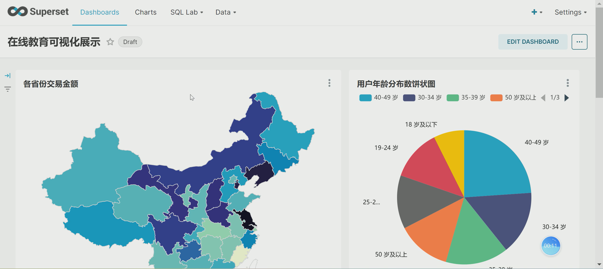
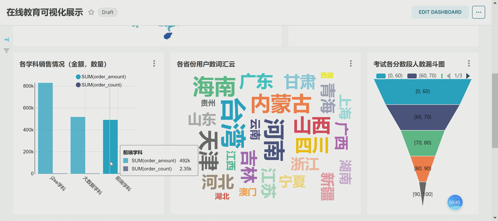
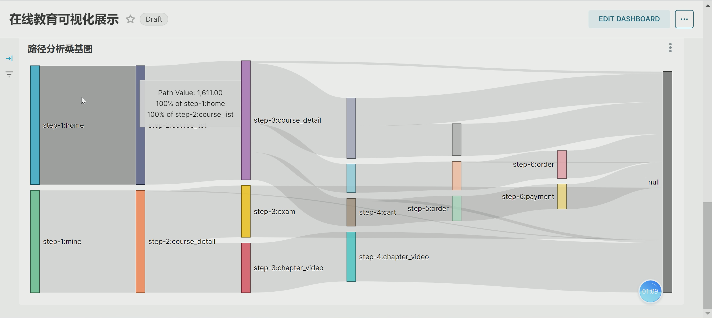

Educational Big Data Student Information System
Educational Big Data · Distributed Computing · Data Visualization
This project developed a distributed educational data system for collecting, processing, analyzing, and visualizing large-scale student behavioral data. It provided practical experience in constructing a data-processing pipeline from distributed data collection to analysis and visualization.
The system was implemented in a distributed Linux environment using three Ubuntu virtual machines. Hadoop and Spark were configured to support distributed data processing, while a Flume–Kafka–Flume pipeline was used for data transmission and collection.
Implementation
- Configured a distributed Linux environment with three Ubuntu virtual machines using VMware.
- Deployed and configured Hadoop and Spark for distributed storage and computation.
- Constructed a Flume–Kafka–Flume data pipeline for collecting and transmitting student-related behavioral data.
- Used SQL to clean, transform, aggregate, and organize the collected educational data.
- Processed more than one million student behavioral records in the data-processing workflow.
- Built visual reports with Apache Superset to explore patterns in the processed educational data.
Technologies
Linux · VMware · Hadoop · Spark · Flume · Kafka · SQL · Apache Superset · Distributed Data Processing
Project Media


